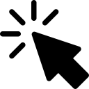

Stroboscopic Effect
Motion and time illusion
El siguiente programa se realiza la ilusion visual Stroboscopic Effect ,como se ve en el articulo de wikipedia Stroboscopic Effect,
Es un fenomeno visual causado por el aliasing que ocurre cuando el movimiento continuo es representado por una serie de muestras breves e instantaneas
.Por ejemplo, un objeto gira a 60 revoluciones por segundo: si se ve con una serie de destellos cortos a 60 veces por segundo, cada destello ilumina el objeto en la misma posición en su ciclo de rotación,
por lo que parece que el objeto está estacionario.
En la ilusion se genera una figura con forma de manecilla de reloj, la cual rota en sentido horario, luego de ser activada la ilusion, cada cierto tiempo se hace un efecto estroboscópico mostrando una
instantanea del movimiento, en la cual la ilusion le permitirá ver 4 movimientos distintos, en 4 objetos que se mueven de manera periódica:
Comandos por Teclado
| Comando | Operacion |
|---|---|
|  | Activa la ilusion |
| Desactiva la ilusion |